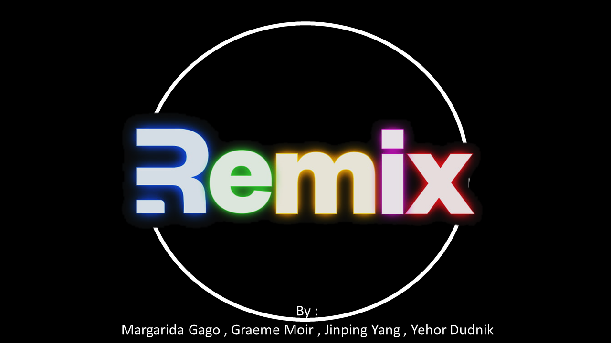
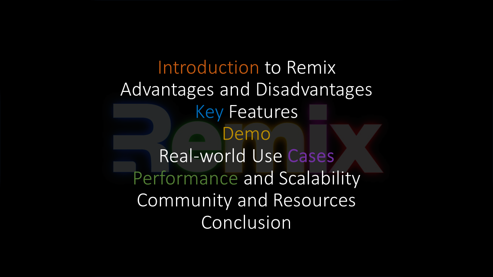
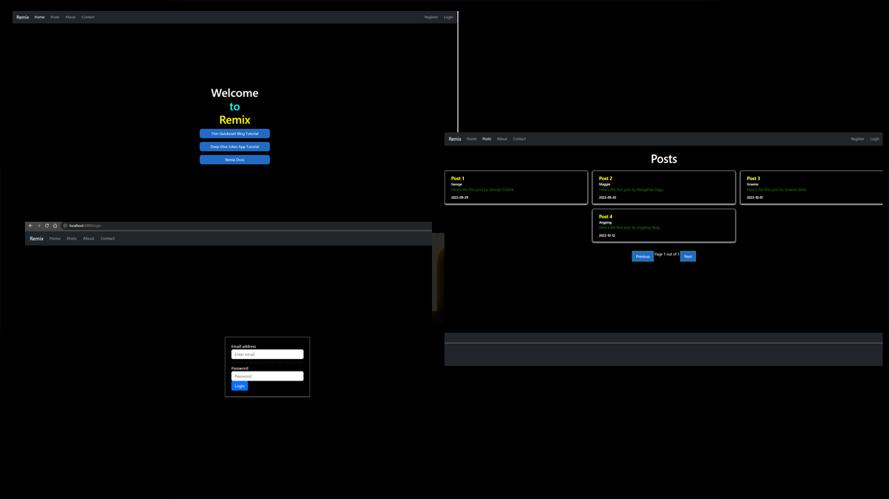
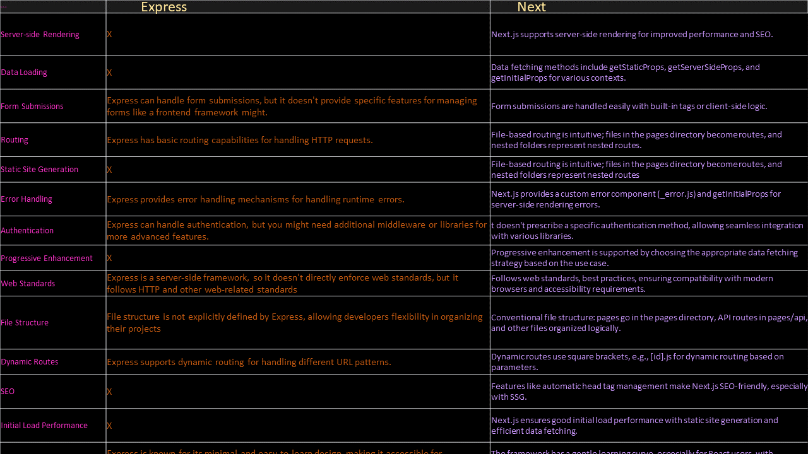
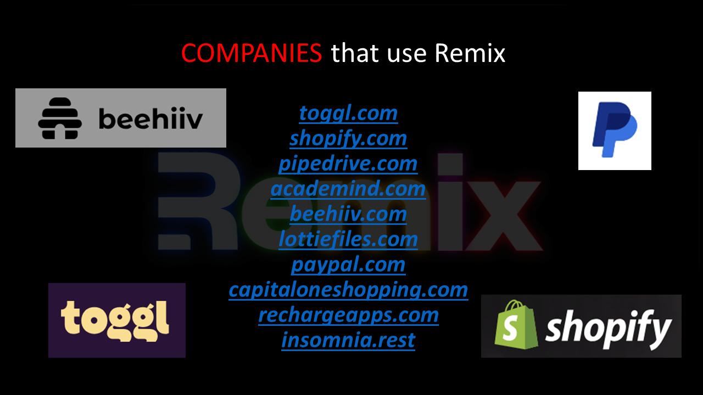
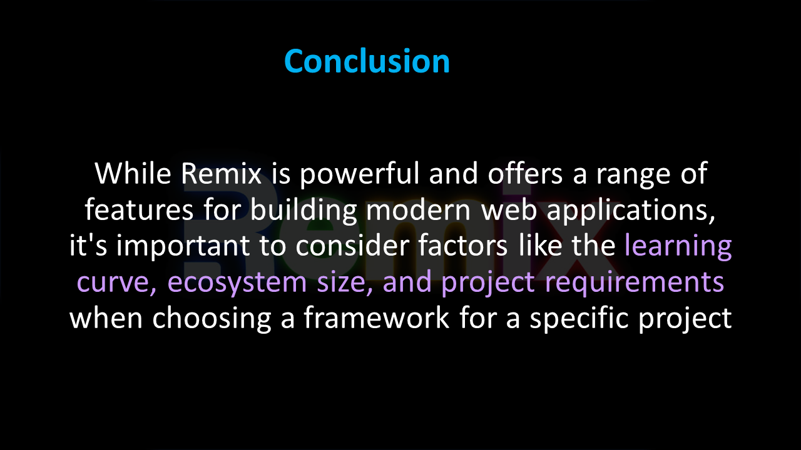

Remix

Contents

Introduction to Remix

Advantages and Disadvantages

Advantages
- Enhanced Developer Experience: Remix provides a delightful developer experience with features like
file-based routing, data fetching, and layout components, making application development easier and more
enjoyable.
- Server-Side Rendering (SSR) by Default: Remix excels in server-side rendering, offering improved performance
and SEO benefits right out of the box.
- Modular UI Development: The framework encourages a modular approach to UI development with layouts and
components, enhancing code reusability and maintainability.
- Built-in Data Fetching: The loader function simplifies data fetching during server-side rendering, ensuring
efficient handling of data requirements.
- Opinionated Structure for Consistency: Remix's opinionated structure helps maintain consistency across
projects, facilitating collaboration and code understanding within teams.
Disadvantages
- Learning Curve: Remix has a learning curve, which can slow down developers, especially those new to its
file-based routing and unique concepts.
- Ecosystem Size: Remix is relatively new, so its ecosystem might not have as many third-party integrations
and plugins as more established frameworks.
- Migration Challenges: Adapting an existing React application to Remix can be challenging due to differences
in structure and potential compatibility issues.
- Opinionated Nature: Remix's opinionated approach might restrict customization, making it less suitable for
projects that require high flexibility.
- Community Size: While growing, Remix's community might not be as large as other frameworks, affecting the
availability of community-driven resources and support.
Key Features

Demo

- Demonstrate the ease of project setup. Creating Pages and Routes
- Showcase the use of layouts and components for modular design. Form Handling
Code Sample 1
import "../components/styles/styles.css"
export default function About(){
return <h1 className="UIOP" style=><span className="IKM">About</span> <span className="IJN">Page</span></h1>
}
- Demonstrate handling forms and user input.
- Live coding example of fetching data with the loader function.
Layouts and Components
Code Sample 2
// Using HTML forms in Remix
import { Link } from 'remix';
export default function FormPage() {
return (
<form method="post">
<label>
Name:
<input type="text" name="name" />
</label>
<button type="submit">Submit</button>
</form>
);
}
export async function action({ request }) {
const formData = new URLSearchParams(await request.text());
const name = formData.get('name');
// Handling the form submission
}
Demo slide 2

- Server-side rendering
- Handling user authentication in Remix
Demo slide 3

- Routing
- Fetching data from an external source
Demo slide 4 - Result

Remix and React

Express.js and Next.js

Companies that use Remix

Conclusion

Go back